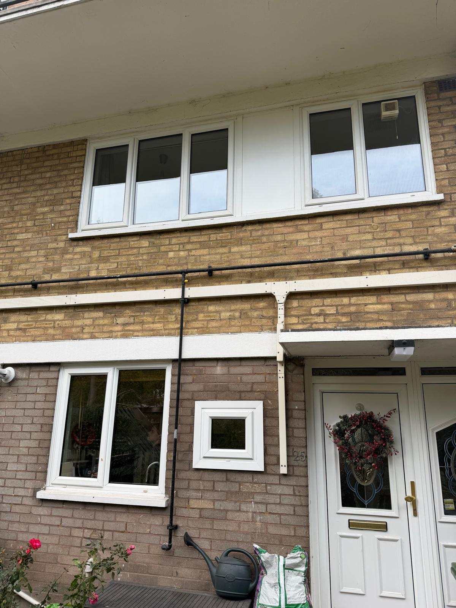
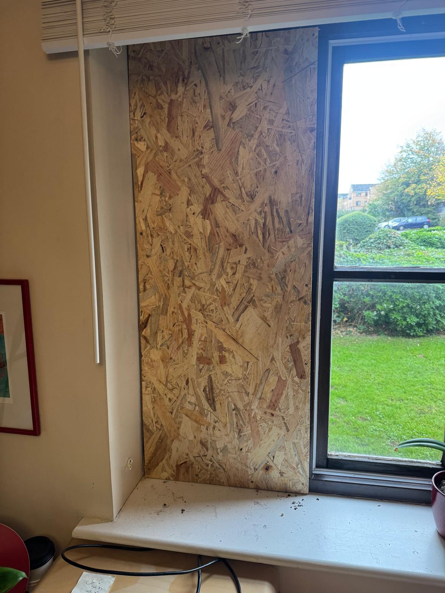
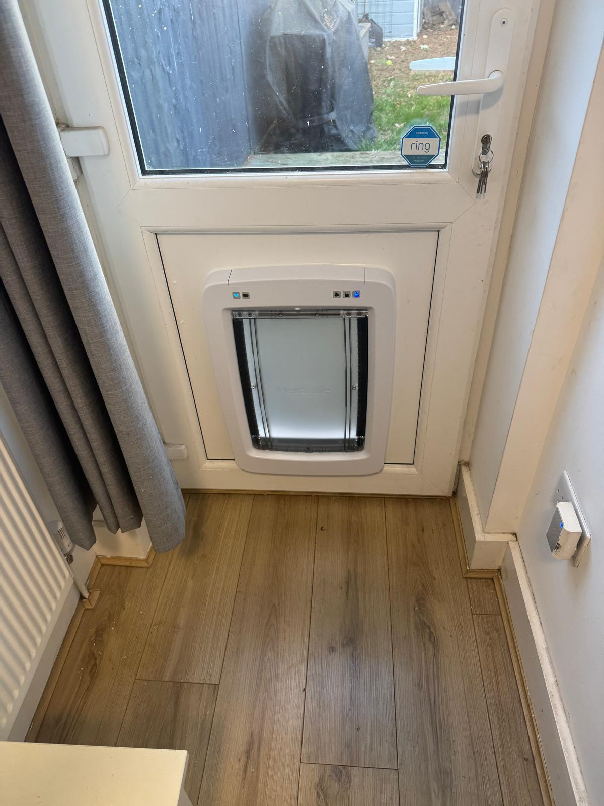
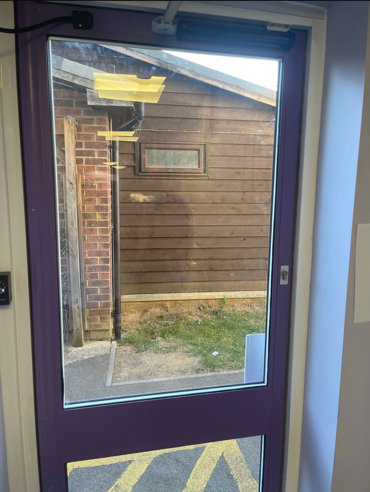
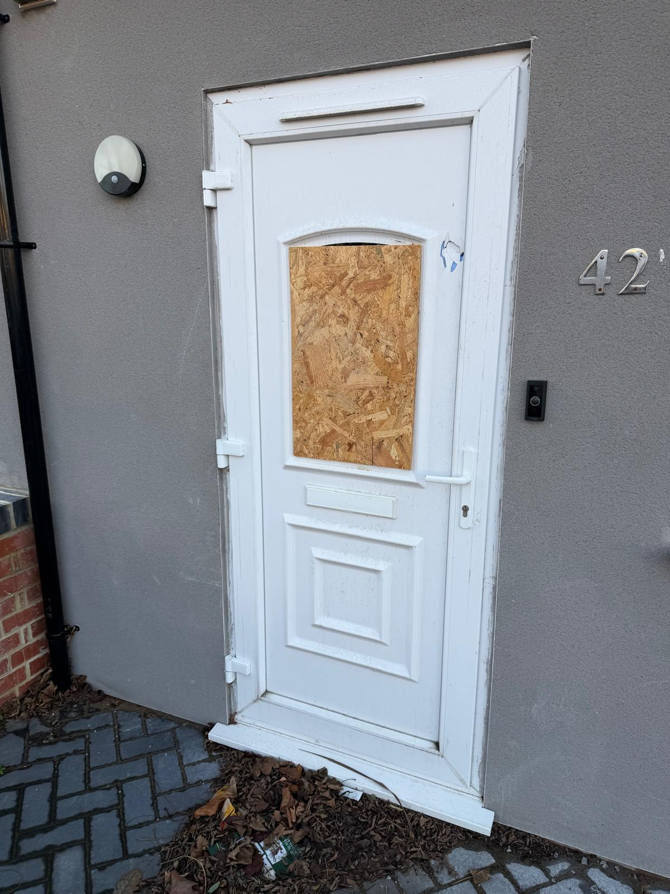
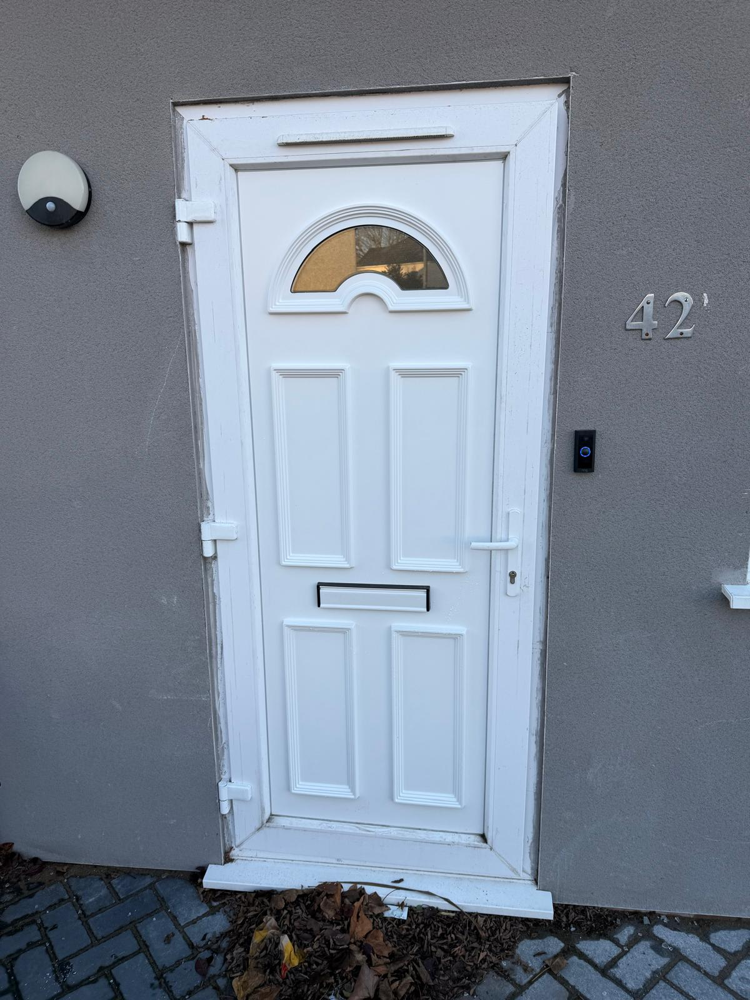

All Services:
- Emergency Glazing
- Mirrors
- Misty Double Glazing
- Shop Fronts
- Commercial Glazing
- Cat Flaps/Dog Flaps
- Ease and Adjust Windows/Doors
- Table Tops
- Replacement window hinges
- Window restrictors
In addition to our core glazing work, Jon's Glass Glazing offers a wide range of additional services to meet all your glass needs. These include double glazed units with holes, installation of mirrors, shopfronts , table tops and more. With a focus on customer satisfaction, and prompt service, we’re your local go-to for reliable and high-quality glasswork.




At Jon's Glass and Glazing we pride ourselves on being one of London’s and Essex's best local glazing companies. We offer a variety of services including misty window repairs, replacement window hinges and handels throughout London and Essex


Email: jonsglassandglazing@gmail.com
 Instagram:
Jon's Glass & Glazing
Instagram:
Jon's Glass & Glazing
Phone: 0800 6546053
Open 7 Days a Week 24 Hour (Emergency call-outs only)
Monday: 8:00 AM – 8:00 PM
Tuesday: 8:00 AM – 8:00 PM
Wednesday: 8:00 AM – 8:00 PM
Thursday: 8:00 AM – 8:00 PM
Friday: 8:00 AM – 8:00 PM
Saturday: 8:00 AM – 6:00 PM
Sunday: Closed (Emergency call-outs only)